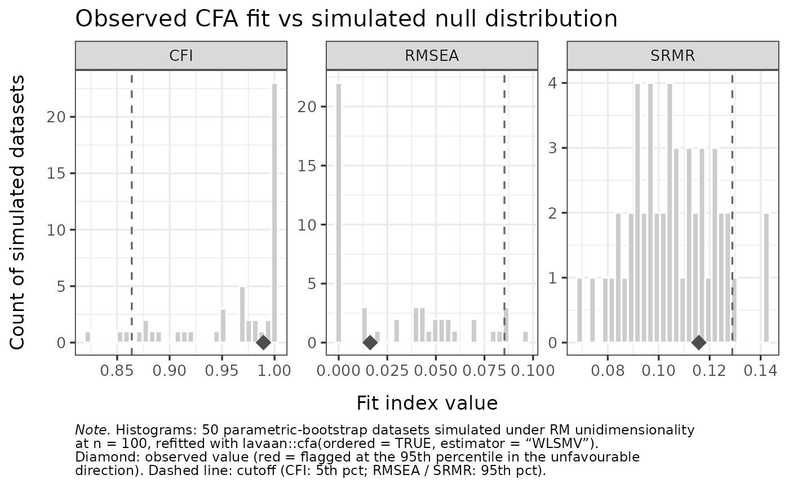

Plot observed CFA fit and loadings against the simulated null
Source:R/cfa_cutoff.R
RMdimCFAPlot.RdReturns two figures (in a list) comparing the observed one-factor CFA to
the simulated null distribution from RMdimCFACutoff:
a per-item standardized-loadings plot (observed marker against each item's
simulated distribution and expected range, in the style of
RMitemInfitPlot), and a faceted plot of the CFI / RMSEA
/ SRMR distributions with the observed value overlaid.
Arguments
- simfit
The list returned by
RMdimCFACutoff.- data
The item-response data the CFA was run on (the same items used for the cutoff). Required: the observed values are computed from it.
- percentile
Numeric in (50, 100) or
NULL. When supplied, the cutoffs and flags are recomputed at this percentile from the stored simulated distributions (no re-simulation). WhenNULL(default), the percentile from the originalRMdimCFACutoff()call is reused.
Value
A named list of two ggplot objects:
loadingsPer-item standardized loadings: simulated distribution (dots), expected interval, and the observed loading as a diamond (red when flagged).
fitFaceted CFI / RMSEA / SRMR simulated distributions with the observed value and cutoff overlaid.
Examples
# \donttest{
if (requireNamespace("lavaan", quietly = TRUE) &&
requireNamespace("ggplot2", quietly = TRUE) &&
requireNamespace("eRm", quietly = TRUE)) {
data("raschdat1", package = "eRm")
sim <- RMdimCFACutoff(raschdat1[, 1:8], iterations = 50,
parallel = FALSE, seed = 1)
plots <- RMdimCFAPlot(sim, data = raschdat1[, 1:8])
plots$loadings
plots$fit
}

# }